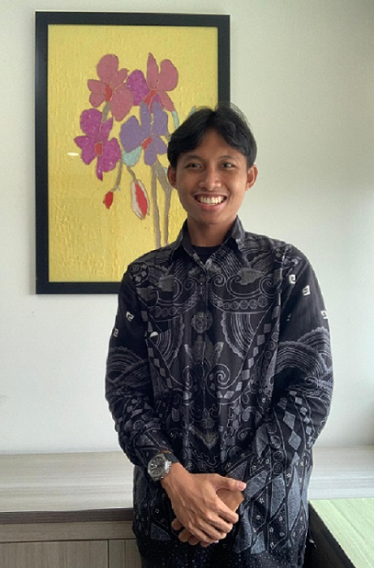

Totalitas · Loyalitas · Integritas
CAlON KETUA
HIMPUNAN MAHASISWA JURUSAN BIOLOGI DAN PERIKANAN KELAUTAN
MASA BAKTI 2024/2025

Visi Misi
Visi
Melaksanakan Himpunan Mahasiswa Jurusan yang Mampu Menumbuhkan Daya Tarik Terhadap Kegiatan Kemahasiswaan dengan Sepenuh Hati.
Misi
1. Mewujudkan Mahasiswa Berakhlak dan Berkarakter
2. Merealisasikan kesejahteraan dan penyederhanaan Kepanitiaan Mahasiswa
3. Memaksimalkan Kinerja dan Partisipasi Mahasiswa KIP
4. Mendukung Ekonomi Kreatif Mahasiswa
2. Merealisasikan kesejahteraan dan penyederhanaan Kepanitiaan Mahasiswa
3. Memaksimalkan Kinerja dan Partisipasi Mahasiswa KIP
4. Mendukung Ekonomi Kreatif Mahasiswa
BIODATA
- NIM: 2213111009
- Nama Lengkap : Immanuel Kristo Limbong
- Tepat & Tanggal Lahir: Bekasi, 26 Februari 2004
- Fakultas: Matematika Ilmu Pengetauan Alam
- Jurusan: Biologi Dan Perikanan Kelautan
- Prodi: Akuakultur
- Semester: 4
Riwayat Pendidikan
2022 - SEKARANG
UNIVERSITAS PENDIDIKAN GANESHA
BULELENG, SINGARAJA
BELUM LULUS
AKUAKULTUR
Saat kuliah di Program Studi Akuakultur, saya mendapatkan wawasan mendalam melalui mata kuliah seperti Biologi Perikanan dan Manajemen Akuakultur. Terlibat dalam kegiatan ekstrakurikuler, seperti seminar dan workshop, juga memberikan perspektif praktis. Meskipun masih di semester awal, saya tertarik pada riset dan inovasi di bidang akuakultur, dan berharap terus mengembangkan potensi ini.
2019 - 2022
SMAN 19 BEKASI
PADURENAN, KOTA BEKASI
LULUS
MATEMATIKA DAN ILMU ALAM
Selama berada di SMA, saya mengalami banyak pengalaman berharga yang membentuk pribadi dan pemahaman saya terhadap kehidupan. Terlibat dalam kegiatan ekstrakurikuler, menjadi bagian dari tim acara sekolah, dan menjalani tantangan akademis telah memperkaya pengetahuan dan keterampilan saya. Selain itu, bekerja sama dalam proyek-proyek kelompok dan menghadapi ujian besar mengajarkan nilai-nilai kerjasama, ketekunan, dan manajemen waktu. Semua pengalaman ini, bersama dengan dukungan guru dan teman-teman, telah menjadi fondasi yang kuat untuk perjalanan pendidikan saya di tingkat berikutnya.
2016 - 2019
SMPN 40 BEKASI
MUSTIKA JAYA,KOTA BEKASI
LULUS
-
Selama menjalani pendidikan di SMP, saya mengalami beragam pengalaman yang membentuk diri saya menjadi pribadi yang lebih berkembang. Saya aktif dalam berbagai kegiatan ekstrakurikuler dan organisasi di sekolah, yang tidak hanya meningkatkan keterampilan sosial tetapi juga membantu saya mengasah kemampuan kepemimpinan. Di bidang akademis, saya giat belajar dan berhasil mengatasi berbagai tantangan pembelajaran. Selain itu, saya juga belajar untuk mengelola waktu dan tanggung jawab dengan efektif. Seluruh perjalanan di SMP membekali saya dengan pondasi yang kokoh untuk melanjutkan ke jenjang pendidikan berikutnya.
Pencapaian Dan Prestasi
2023
UNIVERSITAS JENDRAL SOEDIRMAN
PUWERKERTO, JAWA TENGAH
Juara I
Lomba Essay Internasional Universitas Jenderal Soedirman (2023)
Deskripsi Lomba :
none.
none.
2023
UNIVERSITAS NUSA CENDANA
KUPANG, NTT
JUARA III
Lomba Karya Tulis Ilmiah Nasional Universitas Cendana (2023)
Deskripsi Lomba :
none.
none.
2023
PENYELENGGARA
KECAMATAN,KOTA
Juara Favorit
Lomba Videografi ”Kreasea” Dalam Aksi Persuasif Peduli Pantai.
Deskripsi Lomba :
none.
none.
Pengalaman Organisasi & Kepanitiaan
Himpunan Mahasiswa Jurusan Biologi dan Perikanan Kelautan (2022-Sekarang)
2023
1. BINA (Biomerish in Action) – Wakil Ketua Pelaksana
2. Pengabdian Pada Masyarakat – Divisi Publikasi dan Dokumentasi.
3. Family Gathering Ikatan Mahasiswa Perikanan Ganesha – Ketua Pelaksana.
4. Kemah Ilmiah Mahasiswa – Divisi Publikasi dan Dokumentasi.
5. Biomerish Family Solidarity – Divisi Disiplin dan Tata Tertib.
6. HUT Biomerish – Divisi Konsumsi dan Kerohanian.
2022
7. Gema Lomba Biologi – Divisi Kesekretariatan.
8. Pelatihan Penulisan Karya Tulis Ilmiah – Divisi Kesekretarian
Perhimpunan Mahasiswa Wirausaha Indonesia (Delegasi)
2023
9. Musyawarah Nasional PMWI ke-IV – Divisi Penggalangan Dana
Kelompok Kerja Penalaran FMIPA (2023-Sekarang)
2023
10. Lomba PKM-PMW Tingkat Mahasiswa se-Undiksha – Koordinator Divisi Publikasi, Dekorasi dan Dokumentasi.
11. ON-MIPA se-FMIPA – Divisi Publikasi, Dekorasi dan Dokumentasi.
Badan Eksekutif Mahasiswa (Delegasi)
2022
12. Mipa Awards Tahun 2022 – Divisi Perlengkapan dan Dekorasi.
RENDAH HATI, TAHAN MALANG,KUAT TEKAT
Saya Immanuel Kristo Limbong Meminta Dukungan Dan Restu Untuk Maju Menjadi
Ketua Umum HMJ Biologi Dan Perikanan Kelautan
Saya Mengharapkan Kontribusi Mahasiswa Jurusan Biologi Dan Perikanan Kelautan Untuk
Mengikuti Kegiatan Kemahasiswaan Dengan Sepenuh Hati - Immanuel Kristo Limbong (Kael)